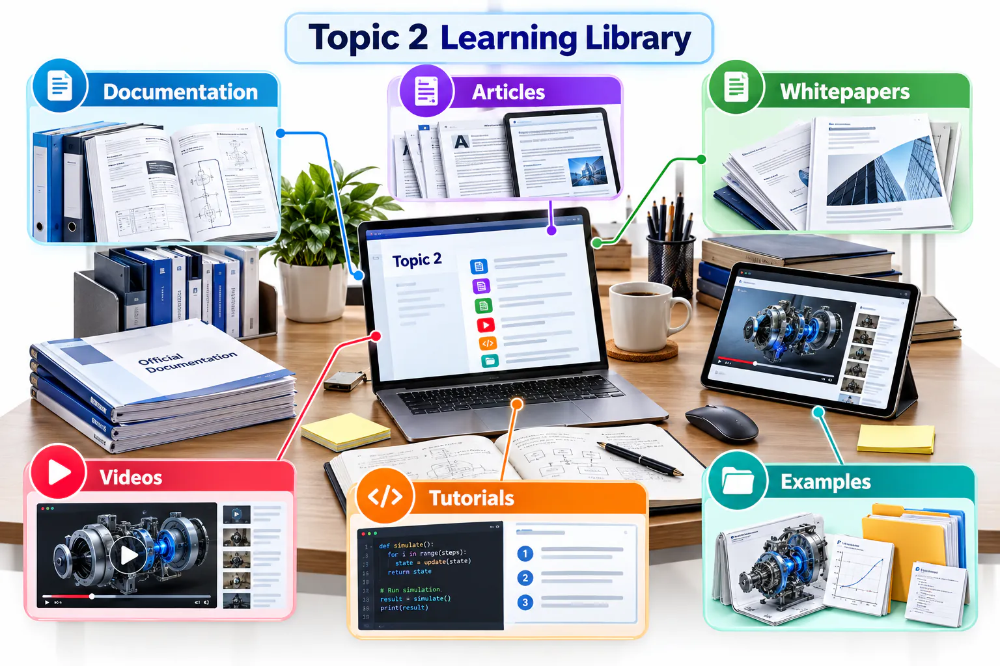
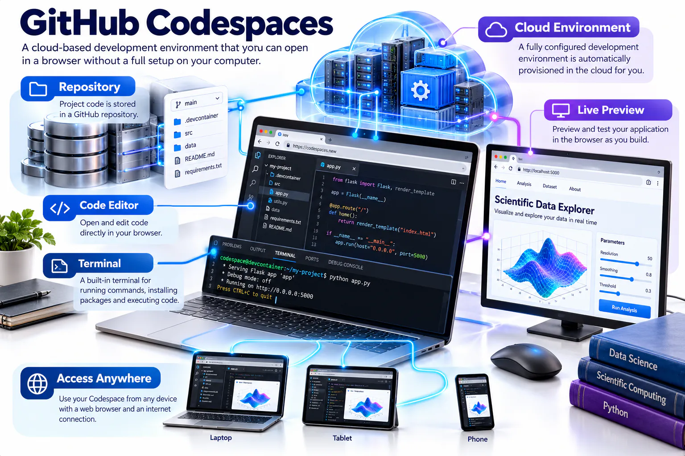
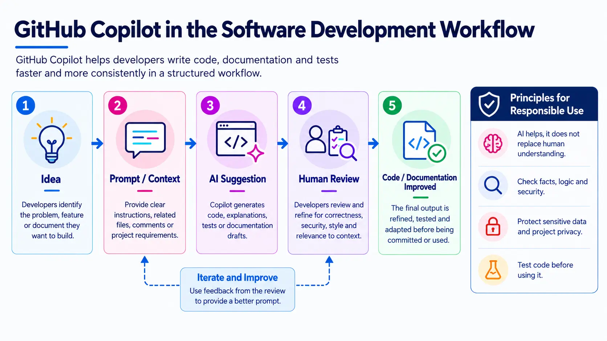

Build informed digital practice
Start with the core selections, then explore optional resources that match your interests.

How to use this page
Build and publish
GitHub
Hello World
Learn the essential repository, branch, commit and pull-request workflow through GitHub's official beginner guide.
Read the guide →Octoverse 2025
Explore evidence about open-source participation, AI, programming languages and changes in global software development.
Explore the report →Introduction to GitHub
Follow an official interactive course that demonstrates the workflow inside a real repository.
Start the course →Design and prototype
Figma
What is UI design?
Review the principles, visual decisions and practical responsibilities involved in creating a usable interface.
Read the article →Design Systems 101
Understand how reusable foundations and components improve consistency, collaboration and design quality.
Read the guide →Figma official videos
Watch demonstrations of interface design, components, Auto Layout, prototyping and collaboration.
Browse official videos →Prompt and generate
Google Stitch
Explore Google Stitch
Review the current product experience and observe how prompts and visual inputs become interface concepts.
Open Stitch →People + AI Guidebook
Use Google's human-centred guidance to evaluate AI-assisted design, user needs, trust and feedback.
Explore the guidebook →Google Labs official videos
Find product demonstrations and updates for experimental AI tools and design-generation workflows.
Browse official videos →Explain and present
Google Vids
Google Vids product overview
Review the platform's creation, recording, collaboration, sharing and AI-assisted storytelling capabilities.
Read the overview →Google Vids Learning Center
Use the official material to plan, create, edit and share a video for work or study.
Open the learning centre →Google Workspace videos
Watch official demonstrations and find the “Vids on Vids” instructional series.
Browse official videos →Plan and automate
GitHub Projects and Actions
About GitHub Projects
Learn how tables, boards, roadmaps, custom fields and automation support transparent project planning.
Read the documentation →GitHub Actions quickstart
Create a first automated workflow and examine its trigger, job, steps, logs and execution result.
Start the quickstart →Projects and Actions videos
Watch an official demonstration, then identify one planning or automation feature relevant to your project.
Browse official videos →Develop in the cloud
GitHub Codespaces
Codespaces documentation
Understand browser-based development environments, lifecycle, configuration and repository integration.
Read the documentation →What are GitHub Codespaces?
Explore how repeatable, repository-configured cloud environments reduce setup differences between computers.
Read the overview →Codespaces demonstrations
Observe an official cloud-development workflow before deciding when Codespaces adds value.
Browse official videos →Assist, verify and learn
GitHub Copilot
GitHub Copilot documentation
Review current features, supported environments and guidance for using AI-assisted development responsibly.
Read the documentation →Measuring the impact of GitHub Copilot
Examine evidence and measurement approaches rather than relying only on productivity claims.
Explore Copilot research →Copilot demonstrations
Watch an official workflow and note where human review, testing and security checks remain necessary.
Browse official videos →Protect accounts and code
GitHub Security
Secure your repository
Review account protection, secret handling, dependency alerts and repository security settings.
Read the documentation →Application security resources
Select an official report on DevSecOps, software supply chains or developer-first application security.
Browse security resources →GitHub Security videos
Watch an official demonstration and identify one security control to apply to your repository.
Browse official videos →Explore cloud development with Codespaces
GitHub Codespaces provides a configurable development environment in the browser. It can reduce setup differences between computers, but students should still understand the repository, dependencies, usage limits and files created by the environment.

Use Copilot as an assistant
GitHub Copilot can suggest code, explanations and tests from the current context. Treat every suggestion as an unverified draft: inspect it, test it, revise it and disclose meaningful AI assistance where required.

Build secure habits from the beginning
Protect accounts with strong authentication, keep secrets outside the repository, review dependencies and respond to security alerts. If a secret is committed, removing the visible line is not sufficient; revoke and replace the credential immediately.
Connected platforms for GitHub practice
| Platform | Role in the workflow | On-site practice |
|---|---|---|
| GitHub Pages | Publishes a static website from a repository. | Create index.html, enable Pages in repository settings and test the published site on mobile and desktop. |
| GitHub Copilot | Suggests code or explanations from a prompt and current context. | Ask for a small HTML improvement, inspect every suggestion, test it and document what you accepted or rejected. Never paste secrets or private data. |
| VS Code | Edits local project files and previews code before a commit. | Open the cloned repository folder, edit README or HTML, save, preview and review the change in GitHub Desktop. |
| Google Colab | Runs Python notebooks in the browser. | Create a small notebook, remove credentials and private data, save a copy to the course repository and verify that another reader can understand the steps. |
Optional extension exercises
Publish with Pages
Prepare a clear homepage, enable deployment from the correct branch and folder, wait for the build, then test the public address and record a screenshot.
Use Copilot responsibly
Write a precise task prompt, review the proposed result line by line, test it, revise it and disclose meaningful AI assistance in your reflection.
Connect VS Code
Clone using GitHub Desktop, open the repository in VS Code, make one focused change, commit it with a descriptive message and push it.
Connect a Colab notebook
Add headings, explanatory cells and reproducible code. Save the notebook to GitHub only after checking outputs for personal information and tokens.
Connect the tools to software delivery
The DORA State of DevOps research examines capabilities and organisational practices associated with effective software delivery. Consider why version control, collaboration, documentation and user feedback matter beyond the classroom.
Short reflection activity
Select
Choose one article or report and one video directly relevant to your Topic 2 project.
Record
Write the title, publisher, URL and three key insights in your learning notes.
Apply
Use one insight to improve your repository, README, design, prompt or technical video.
Reflect
Add 80–120 words explaining the improvement and its value to your project.
Source quality: Prefer official documentation, recognised industry reports and original publisher channels. Check the publication date and confirm that instructions still match the current interface.
Resource links last reviewed: 12 October 2026. Interfaces, product availability and documentation may change.
Recommended approach: Complete the required Topic 02 pathway first. Then choose only one or two resources that directly support your project or personal roadmap.
Tool-access alternatives
| Primary tool | Alternative evidence |
|---|---|
| Google Stitch | Figma wireframe or a clearly documented HTML/CSS mock-up |
| Google Vids | Google Slides with narration, Clipchamp or another accessible video editor |
| Figma collaboration | Exported PDF/PNG plus a short design explanation |
| GitHub Student Pack | Continue with a standard GitHub account and record the application status |
Links and platform guidance last reviewed: October 2026.